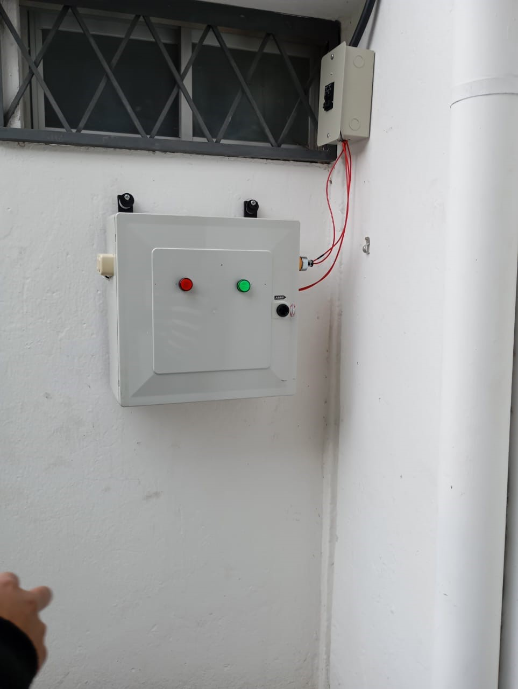
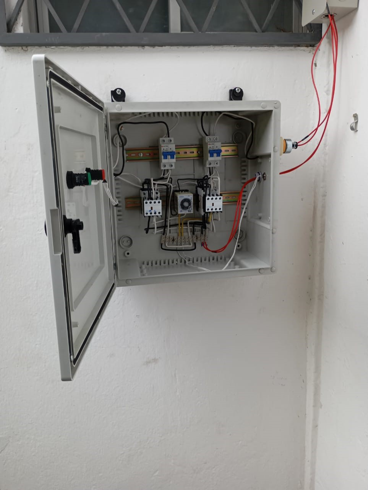

ATS (Sistema de Transmisión Automático) Es un dispositivo que conecta los equipos a una fuente de energía de respaldo cuando la principal falla. Su función es garantizar que las máquinas sigan funcionando durante cortes de energía.


ATS (Sistema de Transmisión Automático) Es un dispositivo que conecta los equipos a una fuente de energía de respaldo cuando la principal falla. Su función es garantizar que las máquinas sigan funcionando durante cortes de energía.
Automatizar la parte eléctrica de un generador en la carrera Pedagogía Técnica de la Mecatrónica
Un interruptor de transferencia automática (ATS) es un dispositivo que conecta los equipos a una fuente de energía de respaldo cuando la principal falla. Su función es garantizar que las máquinas sigan funcionando durante cortes de energía.
Hoy en día, los sistemas automáticos de transferencia son esenciales en una amplia gama de aplicaciones, desde centros de datos que requieren continuidad absoluta, hasta hospitales donde la vida de los pacientes puede depender de la disponibilidad constante de energía. (Cortez, 2023)
Los ATS funcionan interrumpiendo la conexión a la fuente de energía principal antes de conectar a la alternativa.
Un Interruptor de Transferencia Automática (ATS) de 2 polos, 60A y 110 - 220V es un dispositivo que permite cambiar automáticamente entre dos fuentes de energía, garantizando un suministro eléctrico continuo.
Explica la metodología utilizada en el proyecto. ¿Cómo se llevó a cabo la automatización? ¿Qué tecnologías se utilizaron?
Esquema de conexión de la Caja principal de breakers al ATS.
Muestra y describe el diagrama del ATS del circuito utilizado en el proyecto.
Aquí puedes descargar el manual de uso del proyecto en formato PDF.
Descargar Manual (PDF)
Josselyn Cuichan
Teléfono: 0997639100
Correo: jecuichanm@uce.edu.ec
Aracelly Quilumba
Teléfono: 0961385699
Correo: laquilumba@uce.edu.ec
Josue Guaranda
Teléfono: 0962563242
Correo: jjguaranda@uce.edu.ec
Yaguachi Cumbicos Jonathan Manuel
Teléfono: 0983222692
Correo: jmyaguachi@uce.edu.ec
Nicolas Reza
Teléfono: 093 97 934 5505
Correo: jnreza@uce.edu.ec
Sangucho Pilliza Carol Fernanda
Teléfono: 0995037926
Correo: cfsangucho@uce.edu.ec
Nombre 7
Teléfono: 123-456-789
Correo: nombre7@universidad.edu
Kevin Sagñay
Teléfono:0992648546
Correo: kasagnay@uce.edu.ec
Vallejo Loya Katherine Estefania
Teléfono: 0963884467
Correo: kevallejol@uce.edu.ec
Universidad: Universidad Central Del Ecuador
Semestre: X 7mo
Cátedra: Sistema Micro-Controlados
Docente a Cargo: MSc.Victor Hidalgo